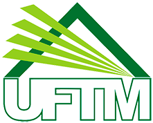

Universidade Federal do Triângulo Mineiro

CC BY-SA 4.0 Imagem: Seltonss. Wikimedia Commons (via Wikipédia).

De TriânguloLeaks, a enciclopédia do Triângulo Mineiro
| Resumo | |
|---|---|
| Universidade pública federal sediada em Uberaba, Minas Gerais, originada da antiga Faculdade de Medicina do Triângulo Mineiro. | |
| Dados | |
| Tipo | Universidade pública federal |
| Origem | Faculdade de Medicina do Triângulo Mineiro (fundada em 1953) |
| Federalização (como faculdade) | 1960 |
| Transformação em universidade | 2005 |
| Sede | Uberaba, Minas Gerais |
A Universidade Federal do Triângulo Mineiro (UFTM) é uma universidade pública federal sediada em Uberaba. A instituição tem origem na Faculdade de Medicina do Triângulo Mineiro (FMTM), fundada em e federalizada em 1960; em 2005, por decreto federal, foi transformada em universidade plena, adotando o nome atual.[1][2]
Da Faculdade de Medicina à universidade [editar]
A Faculdade de Medicina do Triângulo Mineiro (FMTM) foi fundada em , com o curso de Medicina autorizado a funcionar a partir de 1954. A faculdade nasceu vinculada à estrutura hospitalar já existente na cidade, incluindo a antiga Santa Casa de Misericórdia de Uberaba, cujo edifício histórico é hoje anexo do Hospital de Clínicas da UFTM (HC-UFTM).[1][3]
A instituição foi federalizada em 1960. Ao longo das décadas seguintes, ampliou sua oferta de cursos — da Enfermagem, em 1989, a sete cursos de Engenharia, implantados até 2010 —, até ser transformada em universidade, por decreto federal, em 2005, passando a se chamar Universidade Federal do Triângulo Mineiro.[2]
Estrutura e atuação regional [editar]
A UFTM mantém unidades em Uberaba — incluindo o Hospital de Clínicas, inaugurado em 1982 — e um campus em Iturama, instalado em . A universidade também mantém vínculo institucional com o Centro de Pesquisas Paleontológicas Llewellyn Ivor Price, no distrito de Peirópolis. Sua área de influência assistencial, sobretudo na saúde, estende-se a municípios de Minas Gerais e de estados vizinhos, como São Paulo, Goiás, Mato Grosso e Mato Grosso do Sul.[2]
Localização [editar]
Local principal ou mencionado neste artigo: Universidade Federal do Triângulo Mineiro, Uberaba, Minas Gerais.
Ver também
Genealogia das pessoas citadas
Nenhuma pessoa com dados genealógicos é citada neste artigo. Consulte Especial:Genealogia para navegar por todas as famílias do site.
Abrir em Especial:Genealogia · Pesquisa avançada (filtros de genealogia)
Referências
- ↑ UFTM. "Fundação da Faculdade de Medicina do Triângulo Mineiro completa 72 anos" (notícia institucional) — usado para a data de fundação da FMTM (1953) e o início do curso de Medicina (1954). uftm.edu.br.
- ↑ Universidade Federal do Triângulo Mineiro. "Conheça a UFTM" — usado para a federalização (1960), a transformação em universidade (2005), a expansão de cursos e o campus de Iturama. uftm.edu.br/institucional/conheca-a-uftm.
- ↑ UFTM. "HC-UFTM reabre porta de entrada do imóvel tombado da Santa Casa de Misericórdia de Uberaba fechada desde 1981" — usado para a relação entre o antigo edifício da Santa Casa e o HC-UFTM (já citado no artigo sobre a Santa Casa de Misericórdia de Uberaba). uftm.edu.br.